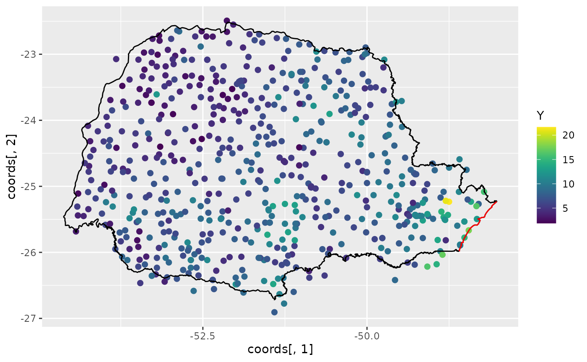
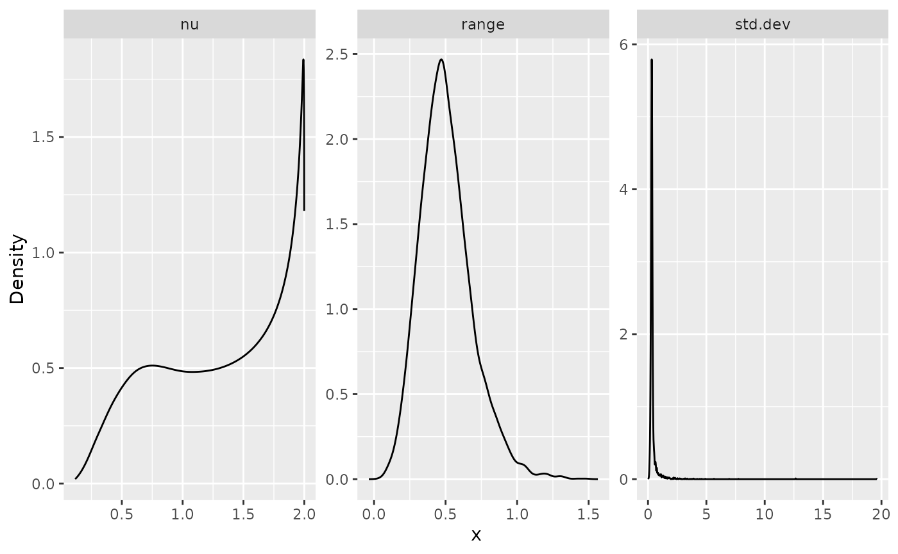
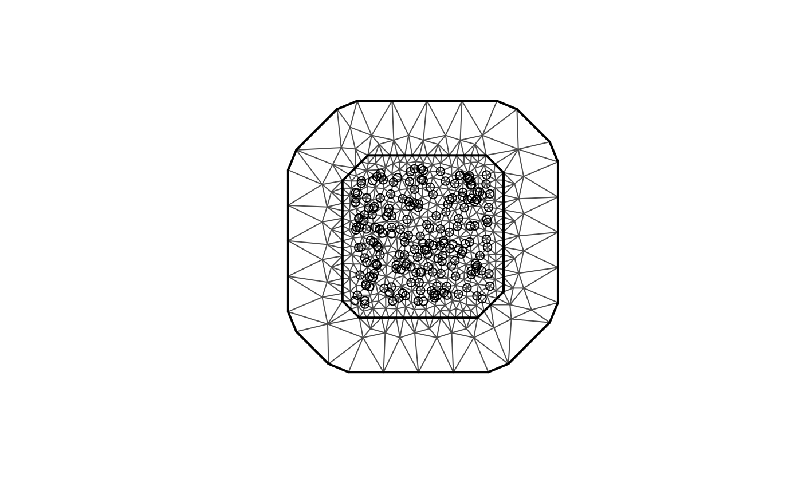
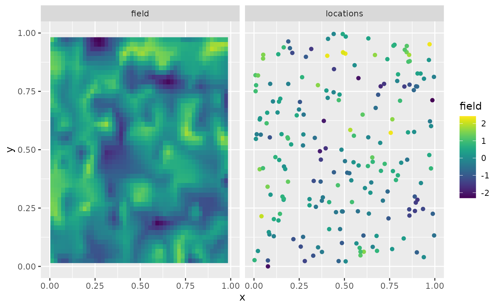
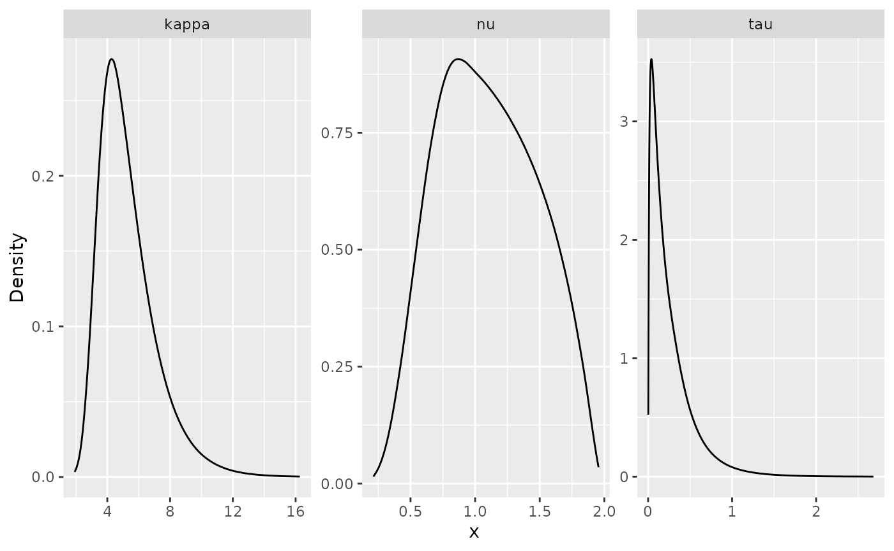

R-INLA implementation of the rational SPDE approach
David Bolin and Alexandre B. Simas
Created: 2021-10-30. Last modified: 2024-07-22.
Source:vignettes/rspde_inla.Rmd
rspde_inla.RmdIntroduction
In this vignette we will present the R-INLA implementation of
the rational SPDE approach. For theoretical details we refer the reader
to the Rational approximation with the
rSPDE package vignette and to Bolin, Simas, and Xiong (2023).
We begin by providing a step-by-step illustration on how to use our implementation. To this end we will consider a real world data set that consists of precipitation measurements from the Paraná region in Brazil.
After the initial model fitting, we will show how to change some parameters of the model. In the end, we will also provide an example in which we have replicates.
It is important to mention that one can improve the performance by
using the PARDISO solver. Please, go to https://www.pardiso-project.org/r-inla/#license to apply
for a license. Also, use inla.pardiso() for instructions on
how to enable the PARDISO sparse library.
Example with real data
To illustrate our implementation of rSPDE in R-INLA we will consider a
dataset available in R-INLA. This data has
also been used to illustrate the SPDE approach, see for instance the
book Advanced
Spatial Modeling with Stochastic Partial Differential Equations Using R
and INLA and also the vignette Spatial
Statistics using R-INLA and Gaussian Markov random fields. See also
Lindgren, Rue, and Lindström (2011) for
theoretical details on the standard SPDE approach.
The data consist of precipitation measurements from the Paraná region in Brazil and were provided by the Brazilian National Water Agency. The data were collected at 616 gauge stations in Paraná state, south of Brazil, for each day in 2011.
An rSPDE model for precipitation
We will follow the vignette Spatial
Statistics using R-INLA and Gaussian Markov random fields. As
precipitation data are always positive, we will assume it is Gamma
distributed. R-INLA
uses the following parameterization of the Gamma distribution,
In this parameterization, the distribution has expected value
and variance
,
where
is a dispersion parameter.
In this example will be modeled using a stochastic model that includes both covariates and spatial structure, resulting in the latent Gaussian model for the precipitation measurements
where
denotes the measurement taken at location
,
are covariates,
is a mean-zero Gaussian Matérn field, and
is a vector containing all parameters of the model, including smoothness
of the field. That is, by using the rSPDE model we will
also be able to estimate the smoothness of the latent field.
Examining the data
We will be using R-INLA. To install R-INLA go to R-INLA Project.
We begin by loading some libraries we need to get the data and build the plots.
Let us load the data and the border of the region
The data frame contains daily measurements at 616 stations for the year 2011, as well as coordinates and altitude information for the measurement stations. We will not analyze the full spatio-temporal data set, but instead look at the total precipitation in January, which we calculate as
Y <- rowMeans(PRprec[, 3 + 1:31])In the next snippet of code, we extract the coordinates and altitudes and remove the locations with missing values.
Let us build plot the precipitation observations using
ggplot:
ggplot() +
geom_point(aes(
x = coords[, 1], y = coords[, 2],
colour = Y
), size = 2, alpha = 1) +
geom_path(aes(x = PRborder[, 1], y = PRborder[, 2])) +
geom_path(aes(x = PRborder[1034:1078, 1], y = PRborder[
1034:1078,
2
]), colour = "red") +
scale_color_viridis()
The red line in the figure shows the coast line, and we expect the distance to the coast to be a good covariate for precipitation. This covariate is not available, so let us calculate it for each observation location:
Now, let us plot the precipitation as a function of the possible covariates:
par(mfrow = c(2, 2))
plot(coords[, 1], Y, cex = 0.5, xlab = "Longitude")
plot(coords[, 2], Y, cex = 0.5, xlab = "Latitude")
plot(seaDist, Y, cex = 0.5, xlab = "Distance to sea")
plot(alt, Y, cex = 0.5, xlab = "Altitude")
Creating the rSPDE model
To use the R-INLA
implementation of the rSPDE model we need to load the
functions:
The rSPDE-INLA implementation is very
reminiscent of R-INLA,
so its usage should be straightforward for R-INLA users. For
instance, to create a rSPDE model, one would use
rspde.matern() in place of
inla.spde2.matern(). To create an index, one should use
rspde.make.index() in place of
inla.spde.make.index(). To create the A
matrix, one should use rspde.make.A() in place of
inla.spde.make.A(), and so on.
The main differences when comparing the arguments between the
rSPDE-INLA implementation and the standard
SPDE implementation in R-INLA, are the
nu and rspde.order arguments, which are
present in rSPDE-INLA implementation. We will
see below how use these arguments.
Mesh
We can use fmesher for creating the mesh. We begin by
loading the fmesher package:
Let us create a mesh which is based on a non-convex hull to avoid adding many small triangles outside the domain of interest:
prdomain <- fm_nonconvex_hull(coords, -0.03, -0.05, resolution = c(100, 100))
prmesh <- fm_mesh_2d(boundary = prdomain, max.edge = c(0.45, 1), cutoff = 0.2)
plot(prmesh, asp = 1, main = "")
lines(PRborder, col = 3)
points(coords[, 1], coords[, 2], pch = 19, cex = 0.5, col = "red")
The observation matrix
We now create the
matrix, that connects the mesh to the observation locations and then
create the rSPDE model.
For this task, as we mentioned earlier, we need to use an
rSPDEspecific function, whose name is very reminiscent to
R-INLA’s standard SPDE
approach, namely rspde.make.A() (in place of R-INLA’s
inla.spde.make.A()). The reason for the need of this
specific function is that the size of the
matrix depends on the order of the rational approximation. The details
can be found in the introduction of the Rational approximation with the rSPDE
package vignette.
The default order is 2 for our covariance-based rational
approximation. As mentioned in the introduction of the Rational approximation with the rSPDE
package vignette, an approximation of order 2 in the
covariance-based rational approximation has approximately the same
computational cost as the operator-based rational approximation of order
1.
Recall that the latent process
is a solution of
where
.
We want to estimate all three parameters
and
,
which is the default option of
the rSPDE-INLA implementation. However, there
is also an option to fix the smoothness parameter
to some predefined value and only estimate
and
.
This will be discussed later.
In this first example we will assume we want a rational approximation
of order 2. To this end we can use the rspde.make.A()
function. Since we will assume order 2 and that we want to estimate
smoothness, which are the default options in this function, the required
parameters are simply the mesh and the locations:
Abar <- rspde.make.A(mesh = prmesh, loc = coords)Setting up the rSPDE model
To set up an rSPDEmodel, all we need is the mesh. By
default it will assume that we want to estimate the smoothness parameter
and to do a covariance-based rational approximation of order 2.
Later in this vignette we will also see other options for setting up
rSPDE models such as keeping the smoothness parameter fixed
and/or increasing the order of the covariance-based rational
approximation.
Therefore, to set up a model all we have to do is use the
rspde.matern() function:
rspde_model <- rspde.matern(mesh = prmesh)Note that this function is very reminiscent of R-INLA’s
inla.spde2.matern() function. This is a pattern we have
tried to keep consistent in the package: All the rSPDE
versions of some R-INLA function will
either replace inla or inla.spde or
inla.spde2 by rspde.
The inla.stack
Since the covariates are already evaluated at the observation
locations, we only want to apply the
matrix to the spatial effect and not the fixed effects. We can use the
inla.stack() function.
The difference, however, is that we need to use the function
rspde.make.index() (in place of the standard
inla.spde.make.index()) to create the index.
If one is using the default options, that is, to estimate the
smoothness parameter
and to do a rational approximation of order 2, the usage of
rspde.make.index() is identical to the usage of
inla.spde.make.index():
mesh.index <- rspde.make.index(name = "field", mesh = prmesh)We can then create the stack in a standard manner:
stk.dat <- inla.stack(
data = list(y = Y), A = list(Abar, 1), tag = "est",
effects = list(
c(
mesh.index
),
list(
seaDist = inla.group(seaDist),
Intercept = 1
)
)
)Here the observation matrix is applied to the spatial effect and the intercept while an identity observation matrix, denoted by , is applied to the covariates. This means the covariates are unaffected by the observation matrix.
The observation matrices in
are used to link the corresponding elements in the effects-list to the
observations. Thus in our model the latent spatial field
mesh.index and the intercept are linked to the
log-expectation of the observations,
i.e. ,
through the
-matrix.
The covariates, on the other hand, are linked directly to
.
The stk.dat object defined above implies the following
principal linkage between model components and observations
will then be used in the observation-likelihood,
Model fitting
We will build a model using the distance to the sea
as a covariate through an improper CAR(1) model with
,
which R-INLA calls a
random walk of order 1.
Here -1 is added to remove R’s implicit intercept, which
is replaced by the explicit +Intercept from when we created
the stack.
To fit the model we proceed as in the standard SPDE approach and we
simply call inla().
rspde_fit <- inla(f.s,
family = "Gamma", data = inla.stack.data(stk.dat),
verbose = FALSE,
control.inla = list(int.strategy = "eb"),
control.predictor = list(A = inla.stack.A(stk.dat), compute = TRUE)
)INLA results
We can look at some summaries of the posterior distributions for the parameters, for example the fixed effects (i.e. the intercept) and the hyper-parameters (i.e. dispersion in the gamma likelihood, the precision of the RW1, and the parameters of the spatial field):
summary(rspde_fit)## Time used:
## Pre = 0.461, Running = 53.4, Post = 0.155, Total = 54.1
## Fixed effects:
## mean sd 0.025quant 0.5quant 0.975quant mode kld
## Intercept 1.921 0.258 1.415 1.921 2.427 1.921 0
##
## Random effects:
## Name Model
## seaDist RW1 model
## field CGeneric
##
## Model hyperparameters:
## mean sd 0.025quant
## Precision-parameter for the Gamma observations 13.997 9.75e-01 12.12
## Precision for seaDist 33507.887 4.06e+04 2416.22
## Theta1 for field 0.875 1.41e-01 0.61
## Theta2 for field -1.975 1.57e+00 -5.37
## Theta3 for field -3.906 1.15e+00 -6.12
## 0.5quant 0.975quant mode
## Precision-parameter for the Gamma observations 13.98 1.60e+01 13.998
## Precision for seaDist 21002.70 1.40e+05 6574.497
## Theta1 for field 0.87 1.17e+00 0.849
## Theta2 for field -1.87 7.49e-01 -1.356
## Theta3 for field -3.92 -1.58e+00 -4.010
##
## Marginal log-Likelihood: -1255.32
## is computed
## Posterior summaries for the linear predictor and the fitted values are computed
## (Posterior marginals needs also 'control.compute=list(return.marginals.predictor=TRUE)')Let , and . In terms of the SPDE where , we have that and by default The number 4 comes from the upper bound for , which will be discussed later in this vignette.
In general, we have where is the value of the upper bound for the smoothness parameter .
Another choice for prior for is a truncated lognormal distribution and will also be discussed later in this vignette.
rSPDE-INLA results
We can obtain outputs with respect to parameters in the original
scale by using the function rspde.result():
result_fit <- rspde.result(rspde_fit, "field", rspde_model)
summary(result_fit)## mean sd 0.025quant 0.5quant 0.975quant mode
## tau 2.421790 0.346497 1.84543000 2.3837800 3.201510 2.29754000
## kappa 0.375789 0.647198 0.00481242 0.1597180 2.082420 0.00585232
## nu 0.140072 0.184947 0.00900648 0.0769896 0.668753 0.02243900To create plots of the posterior marginal densities, we can use the
gg_df() function, which creates
ggplot2-friendly data frames. The following figure shows
the posterior marginal densities of the three parameters using the
gg_df() function.
posterior_df_fit <- gg_df(result_fit)
ggplot(posterior_df_fit) + geom_line(aes(x = x, y = y)) +
facet_wrap(~parameter, scales = "free") + labs(y = "Density")
This function is reminiscent to the inla.spde.result()
function with the main difference that it has the summary()
and plot() methods implemented.
We can also obtain the results for the matern
parameterization by setting the parameterization argument
to matern:
result_fit_matern <- rspde.result(rspde_fit, "field",
rspde_model, parameterization = "matern")
summary(result_fit_matern)## mean sd 0.025quant 0.5quant 0.975quant mode
## std.dev 3.54856e+04 9.20113e+05 803.81600000 1.87263e+04 5.42334e+04 0.0419917
## range 8.97550e+01 5.00510e+02 -7.05291000 1.85611e+01 6.19547e+02 14.7453000
## nu 1.40072e-01 1.84947e-01 0.00900648 7.69896e-02 6.68753e-01 0.0224390In a similar manner, we can obtain posterior plots on the
matern parameterization:
posterior_df_fit_matern <- gg_df(result_fit_matern)
ggplot(posterior_df_fit_matern) + geom_line(aes(x = x, y = y)) +
facet_wrap(~parameter, scales = "free") + labs(y = "Density")
Predictions
Let us now obtain predictions (i.e. do kriging) of the expected precipitation on a dense grid in the region.
We begin by creating the grid in which we want to do the predictions.
To this end, we can use the rspde.mesh.projector()
function. This function has the same arguments as the function
inla.mesh.projector(), with the only difference being that
the rSPDE version also has an argument nu and
an argument rspde.order. Thus, we proceed in the same
fashion as we would in R-INLA’s standard SPDE
implementation:
nxy <- c(150, 100)
projgrid <- rspde.mesh.projector(prmesh,
xlim = range(PRborder[, 1]),
ylim = range(PRborder[, 2]), dims = nxy
)This lattice contains 150 × 100 locations. One can easily change the
resolution of the kriging prediction by changing nxy. Let
us find the cells that are outside the region of interest so that we do
not plot the estimates there.
Let us plot the locations that we will do prediction:
coord.prd <- projgrid$lattice$loc[xy.in, ]
plot(coord.prd, type = "p", cex = 0.1)
lines(PRborder)
points(coords[, 1], coords[, 2], pch = 19, cex = 0.5, col = "red")
Now, there are a few ways we could calculate the kriging prediction. The simplest way is to evaluate the mean of all individual random effects in the linear predictor and then to calculate the exponential of their sum (since ). A more accurate way is to calculate the prediction jointly with the estimation, which unfortunately is quite computationally expensive if we do prediction on a fine grid. However, in this illustration, we proceed with this option to show how one can do it.
To this end, first, link the prediction coordinates to the mesh nodes through an matrix
A.prd <- projgrid$proj$A[xy.in, ]Since we are using distance to the sea as a covariate, we also have to calculate this covariate for the prediction locations.
We now make a stack for the prediction locations. We have no data at
the prediction locations, so we set y= NA. We then join
this stack with the estimation stack.
ef.prd <- list(
c(mesh.index),
list(
long = inla.group(coord.prd[
,
1
]), lat = inla.group(coord.prd[, 2]),
seaDist = inla.group(seaDist.prd),
Intercept = 1
)
)
stk.prd <- inla.stack(
data = list(y = NA),
A = list(A.prd, 1), tag = "prd",
effects = ef.prd
)
stk.all <- inla.stack(stk.dat, stk.prd)Doing the joint estimation takes a while, and we therefore turn off
the computation of certain things that we are not interested in, such as
the marginals for the random effect. We will also use a simplified
integration strategy (actually only using the posterior mode of the
hyper-parameters) through the command
control.inla = list(int.strategy = "eb"), i.e. empirical
Bayes.
rspde_fitprd <- inla(f.s,
family = "Gamma",
data = inla.stack.data(stk.all),
control.predictor = list(
A = inla.stack.A(stk.all),
compute = TRUE, link = 1
),
control.compute = list(
return.marginals = FALSE,
return.marginals.predictor = FALSE
),
control.inla = list(int.strategy = "eb")
)We then extract the indices to the prediction nodes and then extract the mean and the standard deviation of the response:
id.prd <- inla.stack.index(stk.all, "prd")$data
m.prd <- rspde_fitprd$summary.fitted.values$mean[id.prd]
sd.prd <- rspde_fitprd$summary.fitted.values$sd[id.prd]Finally, we plot the results:
# Plot the predictions
pred_df <- data.frame(x1 = coord.prd[,1],
x2 = coord.prd[,2],
mean = m.prd,
sd = sd.prd)
ggplot(pred_df, aes(x = x1, y = x2, fill = mean)) +
geom_raster() +
scale_fill_viridis()
Then, the std. deviations:
ggplot(pred_df, aes(x = x1, y = x2, fill = sd)) +
geom_raster() + scale_fill_viridis()
An example with replicates
For this example we will simulate a data with replicates. We will use
the same example considered in the Rational
approximation with the rSPDE package vignette (the only
difference is the way the data is organized). We also refer the reader
to this vignette for a description of the function
matern.operators(), along with its methods (for instance,
the simulate() method).
Simulating the data
Let us consider a simple Gaussian linear model with 30 independent replicates of a latent spatial field , observed at the same locations, , for each replicate. For each we have
where are iid normally distributed with mean 0 and standard deviation 0.1.
We use the basis function representation of
to define the
matrix linking the point locations to the mesh. We also need to account
for the fact that we have 30 replicates at the same locations. To this
end, the
matrix we need can be generated by spde.make.A() function.
The reason being that we are sampling
directly and not the latent vector described in the introduction of the
Rational approximation with the
rSPDE package vignette.
We begin by creating the mesh:
m <- 200
loc_2d_mesh <- matrix(runif(m * 2), m, 2)
mesh_2d <- fm_mesh_2d(
loc = loc_2d_mesh,
cutoff = 0.05,
offset = c(0.1, 0.4),
max.edge = c(0.05, 0.5)
)
plot(mesh_2d, main = "")
points(loc_2d_mesh[, 1], loc_2d_mesh[, 2])
We then compute the
matrix, which is needed for simulation, and connects the observation
locations to the mesh. To this end we will use the
spde.make.A() helper function, which is a wrapper that uses
the functions fm_basis(), fm_block() and
fm_row_kron() from the fmesher package.
n.rep <- 30
A <- spde.make.A(
mesh = mesh_2d,
loc = loc_2d_mesh,
index = rep(1:m, times = n.rep),
repl = rep(1:n.rep, each = m)
)Notice that for the simulated data, we should use the
matrix from spde.make.A() function instead of the
rspde.make.A() function.
We will now simulate a latent process with standard deviation
and range
.
We will use
so that the model has an exponential covariance function. To this end we
create a model object with the matern.operators()
function:
nu <- 0.5
sigma <- 1
range <- 0.1
kappa <- sqrt(8 * nu) / range
tau <- sqrt(gamma(nu) / (sigma^2 * kappa^(2 * nu) * (4 * pi) * gamma(nu + 1)))
d <- 2
operator_information <- matern.operators(
mesh = mesh_2d,
nu = nu,
range = range,
sigma = sigma,
m = 2,
parameterization = "matern"
)More details on this function can be found at the Rational approximation with the rSPDE package vignette.
To simulate the latent process all we need to do is to use the
simulate() method on the operator_information
object. We then obtain the simulated data
by connecting with the
matrix and adding the gaussian noise.
set.seed(1)
u <- simulate(operator_information, nsim = n.rep)
y <- as.vector(A %*% as.vector(u)) +
rnorm(m * n.rep) * 0.1The first replicate of the simulated random field as well as the observation locations are shown in the following figure.
proj <- fm_evaluator(mesh_2d, dims = c(100, 100))
df_field <- data.frame(x = proj$lattice$loc[,1],
y = proj$lattice$loc[,2],
field = as.vector(fm_evaluate(proj,
field = as.vector(u[, 1]))),
type = "field")
df_loc <- data.frame(x = loc_2d_mesh[, 1],
y = loc_2d_mesh[, 2],
field = y[1:m],
type = "locations")
df_plot <- rbind(df_field, df_loc)
ggplot(df_plot) + aes(x = x, y = y, fill = field) +
facet_wrap(~type) + xlim(0,1) + ylim(0,1) +
geom_raster(data = df_field) +
geom_point(data = df_loc, aes(colour = field),
show.legend = FALSE) +
scale_fill_viridis() + scale_colour_viridis()## Warning: Removed 7648 rows containing missing values or values outside the scale range
## (`geom_raster()`).
Fitting the R-INLA rSPDE model
Let us then use the rational SPDE approach to fit the data.
We begin by creating the
matrix and index with replicates, and the inla.stack
object. It is important to notice that since we have replicates we
should provide the index and repl arguments
for rspde.make.A() function, and also the argument
n.repl in rspde.make.index() function. They
behave identically as in their R-INLA’s counterparts,
namely, inla.spde.make.A() and
inla.make.index().
Abar.rep <- rspde.make.A(
mesh = mesh_2d, loc = loc_2d_mesh, index = rep(1:m, times = n.rep),
repl = rep(1:n.rep, each = m)
)
mesh.index.rep <- rspde.make.index(
name = "field", mesh = mesh_2d,
n.repl = n.rep
)
st.dat.rep <- inla.stack(
data = list(y = y),
A = Abar.rep,
effects = mesh.index.rep
)We now create the model object.
rspde_model.rep <- rspde.matern(mesh = mesh_2d, parameterization = "spde") Finally, we create the formula and fit. It is extremely important not
to forget the replicate argument when building the formula
as inla() function will not produce warning and might fit
some meaningless model.
f.rep <-
y ~ -1 + f(field,
model = rspde_model.rep,
replicate = field.repl
)
rspde_fit.rep <-
inla(f.rep,
data = inla.stack.data(st.dat.rep),
family = "gaussian",
control.predictor =
list(A = inla.stack.A(st.dat.rep))
)We can get the summary:
summary(rspde_fit.rep)## Time used:
## Pre = 0.264, Running = 153, Post = 2.91, Total = 157
## Random effects:
## Name Model
## field CGeneric
##
## Model hyperparameters:
## mean sd 0.025quant 0.5quant
## Precision for the Gaussian observations 90.08 4.744 80.80 90.05
## Theta1 for field -2.98 0.058 -3.07 -2.99
## Theta2 for field 3.04 0.038 2.96 3.04
## Theta3 for field -1.62 0.028 -1.68 -1.61
## 0.975quant mode
## Precision for the Gaussian observations 99.46 90.25
## Theta1 for field -2.85 -3.02
## Theta2 for field 3.11 3.04
## Theta3 for field -1.57 -1.60
##
## Marginal log-Likelihood: -4480.38
## is computed
## Posterior summaries for the linear predictor and the fitted values are computed
## (Posterior marginals needs also 'control.compute=list(return.marginals.predictor=TRUE)')and the summary in the user’s scale:
result_fit_rep <- rspde.result(rspde_fit.rep, "field", rspde_model.rep)
summary(result_fit_rep)## mean sd 0.025quant 0.5quant 0.975quant mode
## tau 0.0507423 0.0029869 0.0463862 0.0502488 0.057784 0.0485328
## kappa 20.8638000 0.7891230 19.3731000 20.8420000 22.471500 20.7895000
## nu 0.6631800 0.0152083 0.6297190 0.6648790 0.688222 0.6716370
result_df <- data.frame(
parameter = c("tau", "kappa", "nu"),
true = c(tau, kappa, nu),
mean = c(
result_fit_rep$summary.tau$mean,
result_fit_rep$summary.kappa$mean,
result_fit_rep$summary.nu$mean
),
mode = c(
result_fit_rep$summary.tau$mode,
result_fit_rep$summary.kappa$mode,
result_fit_rep$summary.nu$mode
)
)
print(result_df)## parameter true mean mode
## 1 tau 0.08920621 0.05074225 0.04853284
## 2 kappa 20.00000000 20.86375032 20.78948056
## 3 nu 0.50000000 0.66318017 0.67163688An example with a non-stationary model
It is also possible to consider models in which (std. deviation) and (range parameter) are non-stationary. One can also use the parameterization in terms of the SPDE parameters and .
An example of such a model is given in the vignette inlabru implementation of the rational SPDE approach.
Further options of the rSPDE-INLA
implementation
We will now discuss some of the arguments that were introduced in our
R-INLA implementation
of the rational approximation that are not present in R-INLA’s standard SPDE
implementation.
In each case we will provide an illustrative example.
Changing the upper bound for the smoothness parameter
When we fit a rspde.matern() model we need to provide an
upper bound for the smoothness parameter
.
The reason for that is that the sparsity of the precision matrix should
be kept fixed during R-INLA’s estimation and
the higher the value of
the denser the precision matrix gets.
This means that the higher the value of , the higher the computational cost to fit the model. Therefore, ideally, want to choose an upper bound for as small as possible.
To change the value of the upper bound for the smoothness parameter,
we must change the argument nu.upper.bound. The default
value for nu.upper.bound is 4. Other common choices for
nu.upper.bound are 2 and 1.
It is clear from the discussion above that the smaller the value of
nu.upper.bound the faster the estimation procedure will
be.
However, if we choose a value of nu.upper.bound which is
too low, the “correct” value of
might not belong to the interval
,
where
is the value of nu.upper.bound. Hence, one might be forced
to increase nu.upper.bound and estimate again, which,
obviously will increase the computational cost as we will need to do
more than one estimation.
Let us illustrate by considering the same model we considered above
for the precipitation in Paraná region in Brazil and consider
nu.upper.bound equal to 2, which is generally a good choice
for nu.upper.bound.
We simply use the function rspde.matern() with the
argument nu.upper.bound set to 2:
rspde_model_2 <- rspde.matern(mesh = prmesh, nu.upper.bound = 2)Since we are considering the default rspde.order, the
matrix and the mesh index objects are the same as the previous ones. Let
us then update the formula and fit the model:
f.s.2 <- y ~ -1 + Intercept + f(seaDist, model = "rw1") +
f(field, model = rspde_model_2)
rspde_fit_2 <- inla(f.s.2,
family = "Gamma", data = inla.stack.data(stk.dat),
verbose = FALSE,
control.inla = list(int.strategy = "eb"),
control.predictor = list(A = inla.stack.A(stk.dat), compute = TRUE)
)Let us see the summary of the fit:
summary(rspde_fit_2)## Time used:
## Pre = 0.25, Running = 8.62, Post = 0.0591, Total = 8.93
## Fixed effects:
## mean sd 0.025quant 0.5quant 0.975quant mode kld
## Intercept 1.943 0.044 1.856 1.943 2.03 1.943 0
##
## Random effects:
## Name Model
## seaDist RW1 model
## field CGeneric
##
## Model hyperparameters:
## mean sd 0.025quant
## Precision-parameter for the Gamma observations 13.93 1.01 12.049
## Precision for seaDist 7838.69 4741.45 2329.292
## Theta1 for field -2.58 2.18 -7.520
## Theta2 for field 1.71 0.63 0.674
## Theta3 for field 1.12 1.84 -1.782
## 0.5quant 0.975quant mode
## Precision-parameter for the Gamma observations 13.900 1.60e+01 13.837
## Precision for seaDist 6686.191 2.02e+04 4919.752
## Theta1 for field -2.328 8.42e-01 -1.140
## Theta2 for field 1.654 3.11e+00 1.367
## Theta3 for field 0.909 5.29e+00 -0.083
##
## Marginal log-Likelihood: -1259.11
## is computed
## Posterior summaries for the linear predictor and the fitted values are computed
## (Posterior marginals needs also 'control.compute=list(return.marginals.predictor=TRUE)')Let us compare with the cost from the previous fit, with the default
value of nu.upper.bound of 4:
# nu.upper.bound = 4
rspde_fit$cpu.used## Pre Running Post Total
## 0.4609096 53.4483435 0.1549456 54.0641987
# nu.upper.bound = 2
rspde_fit_2$cpu.used## Pre Running Post Total
## 0.24955726 8.62366557 0.05909252 8.93231535We can see that the fit for nu.upper.bound equal to 2
was considerably faster.
Finally, let us get the result results for the field and see the estimate of :
result_fit_2 <- rspde.result(rspde_fit_2, "field", rspde_model_2)
summary(result_fit_2)## mean sd 0.025quant 0.5quant 0.975quant mode
## tau 0.362617 0.723242 0.000600974 0.103434 2.27701 0.000028935
## kappa 6.861490 5.578440 1.972270000 5.127190 22.11750 3.289670000
## nu 1.313380 0.531782 0.292373000 1.404790 1.98944 1.996180000Changing the order of the rational approximation
To change the order of the rational approximation all we have to do
is set the argument rspde.order to the desired value. The
current available possibilities are 1,2,3,…, up to
8.
The higher the order of the rational approximation, the more accurate the results will be, however, the higher the computational cost will be.
The default rspde.order of 2 is generally a good choice
and reasonably accurate. See the vignette Rational approximation with the rSPDE package
for further details on the order of the rational approximation and some
comparison with the Matérn covariance.
Let us fit the above model with the covariance-based rational
approximation of order 3. Since we are changing the order
of the rational approximation, that is, we are changing the
rspde.order argument, we need to recompute the
matrix and the mesh index. Therefore, we proceed as follows:
- We build a new model:
rspde_model_order_3 <- rspde.matern(mesh = prmesh,
rspde.order = 3,
nu.upper.bound = 2
)- We create a new matrix:
Abar_3 <- rspde.make.A(mesh = prmesh, loc = coords, rspde.order = 3)- We create a new index:
mesh.index.3 <- rspde.make.index(
name = "field", mesh = prmesh,
rspde.order = 3
)Now the remaining steps are the same as before:
stk.dat.3 <- inla.stack(
data = list(y = Y), A = list(Abar_3, 1), tag = "est",
effects = list(
c(
mesh.index.3
),
list(
long = inla.group(coords[, 1]),
lat = inla.group(coords[, 2]),
seaDist = inla.group(seaDist),
Intercept = 1
)
)
)
f.s.3 <- y ~ -1 + Intercept + f(seaDist, model = "rw1") +
f(field, model = rspde_model_order_3)
rspde_fit_order_3 <- inla(f.s.3,
family = "Gamma", data = inla.stack.data(stk.dat.3),
verbose = FALSE,
control.inla = list(int.strategy = "eb"),
control.predictor = list(A = inla.stack.A(stk.dat.3), compute = TRUE)
)Let us see the summary:
summary(rspde_fit_order_3)## Time used:
## Pre = 0.254, Running = 15, Post = 0.0687, Total = 15.3
## Fixed effects:
## mean sd 0.025quant 0.5quant 0.975quant mode kld
## Intercept 1.943 0.044 1.856 1.943 2.03 1.943 0
##
## Random effects:
## Name Model
## seaDist RW1 model
## field CGeneric
##
## Model hyperparameters:
## mean sd 0.025quant
## Precision-parameter for the Gamma observations 13.924 1.008 12.040
## Precision for seaDist 7710.259 4493.947 2372.339
## Theta1 for field -2.040 1.409 -5.210
## Theta2 for field 1.532 0.406 0.827
## Theta3 for field 0.688 1.216 -1.275
## 0.5quant 0.975quant mode
## Precision-parameter for the Gamma observations 13.889 1.60e+01 13.823
## Precision for seaDist 6643.875 1.94e+04 4974.459
## Theta1 for field -1.894 2.22e-01 -1.188
## Theta2 for field 1.506 2.41e+00 1.373
## Theta3 for field 0.566 3.42e+00 -0.032
##
## Marginal log-Likelihood: -1259.60
## is computed
## Posterior summaries for the linear predictor and the fitted values are computed
## (Posterior marginals needs also 'control.compute=list(return.marginals.predictor=TRUE)')We can see in the above summary that the computational cost
significantly increased. Let us compare the cost of having
rspde.order=3 and nu.upper.bound=2 with the
cost of having rspde.order=2 and
nu.upper.bound=4:
# nu.upper.bound = 4
rspde_fit$cpu.used## Pre Running Post Total
## 0.4609096 53.4483435 0.1549456 54.0641987
# nu.upper.bound = 2
rspde_fit_order_3$cpu.used## Pre Running Post Total
## 0.25442028 15.01892757 0.06868029 15.34202814One can check the order of the rational approximation by using the
rational.order() function. It also allows another way to
change the order of the rational order, by using the corresponding
rational.order<-() function.
The rational.order() and
rational.order<-() functions can be applied to the
inla.rspde object, to the A matrix and to the
index objects.
Here to check the models:
rational.order(rspde_model)## [1] 2
rational.order(rspde_model_order_3)## [1] 3Here to check the A matrices:
rational.order(Abar)## [1] 2
rational.order(Abar_3)## [1] 3Here to check the indexes:
rational.order(mesh.index)## [1] 2
rational.order(mesh.index.3)## [1] 3Let us now change the order of the rspde_model object to
be 1:
rational.order(rspde_model) <- 1
rational.order(Abar) <- 1
rational.order(mesh.index) <- 1Let us fit this new model:
f.s.1 <- y ~ -1 + Intercept + f(seaDist, model = "rw1") +
f(field, model = rspde_model)
stk.dat.1 <- inla.stack(
data = list(y = Y), A = list(Abar, 1), tag = "est",
effects = list(
c(
mesh.index
),
list(
long = inla.group(coords[, 1]),
lat = inla.group(coords[, 2]),
seaDist = inla.group(seaDist),
Intercept = 1
)
)
)
rspde_fit_order_1 <- inla(f.s.1,
family = "Gamma", data = inla.stack.data(stk.dat.1),
verbose = FALSE,
control.inla = list(int.strategy = "eb"),
control.predictor = list(A = inla.stack.A(stk.dat.1), compute = TRUE)
)Here is the summary:
summary(rspde_fit_order_1)## Time used:
## Pre = 0.226, Running = 14.7, Post = 0.0442, Total = 15
## Fixed effects:
## mean sd 0.025quant 0.5quant 0.975quant mode kld
## Intercept 1.943 0.047 1.852 1.943 2.035 1.943 0
##
## Random effects:
## Name Model
## seaDist RW1 model
## field CGeneric
##
## Model hyperparameters:
## mean sd 0.025quant
## Precision-parameter for the Gamma observations 13.954 1.004 12.061
## Precision for seaDist 8479.720 5630.999 2411.633
## Theta1 for field 0.388 1.429 -2.114
## Theta2 for field 0.838 0.718 -0.692
## Theta3 for field -2.470 1.443 -5.575
## 0.5quant 0.975quant mode
## Precision-parameter for the Gamma observations 13.925 1.60e+01 13.882
## Precision for seaDist 7017.985 2.34e+04 4962.669
## Theta1 for field 0.298 3.47e+00 -0.147
## Theta2 for field 0.877 2.12e+00 1.068
## Theta3 for field -2.380 6.30e-02 -1.940
##
## Marginal log-Likelihood: -1258.97
## is computed
## Posterior summaries for the linear predictor and the fitted values are computed
## (Posterior marginals needs also 'control.compute=list(return.marginals.predictor=TRUE)')Estimating models with fixed smoothness
We can fix the smoothness, say
,
of the model by providing a non-NULL positive value for
nu.
When the smoothness, , is fixed, we can have two possibilities:
is integer;
is not integer.
The first case, i.e., when is integer, has less computational cost. Furthermore, the matrix is different than the matrix for the non-integer .
The
matrix is the same for all values of
such that
is integer. So, the
matrix for these cases only need to be computed once. The same holds for
the index obtained from the rspde.make.index()
function.
In the second case the
matrix only depends on the order of the rational approximation and not
on
.
Therefore, if the matrix
has already been computed for some rspde.order, then the
matrix will be same for all the values of
such that
is non-integer for that rspde.order. The same holds for the
index obtained from the rspde.make.index()
function.
If
is fixed, we have that the parameters returned by R-INLA are $$\kappa = \exp(\theta_1)\quad\hbox{and}\quad\tau =
\exp(\theta_2).$$ We will now provide illustrations for both
scenarios. It is also noteworthy that just as for the case in which we
estimate
,
we can also change the order of the rational approximation by changing
the value of rspde.order. For both illustrations with fixed
below, we will only consider the order of the rational approximation of
2, that is, the default order.
Estimating models with fixed smoothness and non-integer
Recall that:
Thus, to illustrate, let us consider a fixed
given by the mean of
obtained from the first model we considered in this vignette, namely,
the fit given by rspde_fit, which is approximately
.
Notice that for this , the value of is non-integer, so we can use the matrix and the index of the first fitted model, which is also of order 2.
Therefore, all we have to do is build a new model in which we set
nu to 1.21:
rspde_model_fix <- rspde.matern(mesh = prmesh, rspde.order = 2,
nu = 1.21
)Let us now fit the model:
f.s.fix <- y ~ -1 + Intercept + f(seaDist, model = "rw1") +
f(field, model = rspde_model_fix)
rspde_fix <- inla(f.s.fix,
family = "Gamma", data = inla.stack.data(stk.dat),
verbose = FALSE,
control.inla = list(int.strategy = "eb"),
control.predictor = list(A = inla.stack.A(stk.dat), compute = TRUE)
)Here we have the summary:
summary(rspde_fix)## Time used:
## Pre = 0.254, Running = 5.32, Post = 0.0531, Total = 5.63
## Fixed effects:
## mean sd 0.025quant 0.5quant 0.975quant mode kld
## Intercept 1.943 0.043 1.859 1.943 2.027 1.943 0
##
## Random effects:
## Name Model
## seaDist RW1 model
## field CGeneric
##
## Model hyperparameters:
## mean sd 0.025quant
## Precision-parameter for the Gamma observations 13.90 1.008 12.024
## Precision for seaDist 7773.27 4725.448 2314.203
## Theta1 for field -1.72 0.370 -2.449
## Theta2 for field 1.50 0.288 0.925
## 0.5quant 0.975quant mode
## Precision-parameter for the Gamma observations 13.87 15.990 13.80
## Precision for seaDist 6617.90 20127.560 4861.27
## Theta1 for field -1.72 -0.993 -1.73
## Theta2 for field 1.50 2.060 1.50
##
## Marginal log-Likelihood: -1260.29
## is computed
## Posterior summaries for the linear predictor and the fitted values are computed
## (Posterior marginals needs also 'control.compute=list(return.marginals.predictor=TRUE)')Now, the summary in the original scale:
result_fix <- rspde.result(rspde_fix, "field", rspde_model_fix)
summary(result_fix)## mean sd 0.025quant 0.5quant 0.975quant mode
## tau 0.190962 0.072452 0.086923 0.178352 0.367975 0.155691
## kappa 4.644350 1.352800 2.533990 4.461850 7.809540 4.116590Estimating models with fixed smoothness and integer
Since we are in dimension , and , the smallest value of that makes an integer is . This value is also close to the estimated mean of the first model we fitted and enclosed by the posterior marginal density of for the first fit. Therefore, let us fit the model with .
To this end we need to compute a new matrix:
Abar.int <- rspde.make.A(
mesh = prmesh, loc = coords,
nu = 1
)a new index:
mesh.index.int <- rspde.make.index(
name = "field", mesh = prmesh,
nu = 1
)create a new model (remember to set nu=1):
rspde_model_fix_int1 <- rspde.matern(mesh = prmesh,
nu = 1)The remaining is standard:
stk.dat.int <- inla.stack(
data = list(y = Y), A = list(Abar.int, 1), tag = "est",
effects = list(
c(
mesh.index.int
),
list(
long = inla.group(coords[, 1]),
lat = inla.group(coords[, 2]),
seaDist = inla.group(seaDist),
Intercept = 1
)
)
)
f.s.fix.int.1 <- y ~ -1 + Intercept + f(seaDist, model = "rw1") +
f(field, model = rspde_model_fix_int1)
rspde_fix_int_1 <- inla(f.s.fix.int.1,
family = "Gamma",
data = inla.stack.data(stk.dat.int), verbose = FALSE,
control.inla = list(int.strategy = "eb"),
control.predictor = list(
A = inla.stack.A(stk.dat.int),
compute = TRUE
)
)Let us check the summary:
summary(rspde_fix_int_1)## Time used:
## Pre = 0.259, Running = 0.913, Post = 0.0296, Total = 1.2
## Fixed effects:
## mean sd 0.025quant 0.5quant 0.975quant mode kld
## Intercept 1.943 0.044 1.856 1.943 2.03 1.943 0
##
## Random effects:
## Name Model
## seaDist RW1 model
## field CGeneric
##
## Model hyperparameters:
## mean sd 0.025quant
## Precision-parameter for the Gamma observations 13.90 1.006 12.031
## Precision for seaDist 7958.10 5019.014 2350.281
## Theta1 for field -1.22 0.329 -1.870
## Theta2 for field 1.38 0.309 0.773
## 0.5quant 0.975quant mode
## Precision-parameter for the Gamma observations 13.86 15.991 13.79
## Precision for seaDist 6692.61 21173.927 4844.30
## Theta1 for field -1.22 -0.573 -1.21
## Theta2 for field 1.38 1.988 1.38
##
## Marginal log-Likelihood: -1260.09
## is computed
## Posterior summaries for the linear predictor and the fitted values are computed
## (Posterior marginals needs also 'control.compute=list(return.marginals.predictor=TRUE)')and check the summary in the user’s scale:
rspde_result_int <- rspde.result(rspde_fix_int_1, "field", rspde_model_fix_int1)
summary(rspde_result_int)## mean sd 0.025quant 0.5quant 0.975quant mode
## tau 0.31203 0.104307 0.155052 0.296212 0.560872 0.26560
## kappa 4.16418 1.306190 2.178260 3.970400 7.263630 3.59762Changing the priors
We begin by recalling that the fitted rSPDE model in R-INLA contains the
parameters
,
and
.
Let, again,
,
and
.
In terms of the SPDE
where
.
We also have the range parameter and the standard deviation .
Changing the priors of and
We begin by dealing with and .
We have that
The rspde.matern() function assumes a lognormal prior
distribution for
and
.
This prior distribution is obtained by assuming that
and
follow normal distributions. By default we assume
and
to be independent and to follow normal distributions
and
.
is suitably defined in terms of the mesh and is defined in terms of and on the prior of the smoothness parameter.
If one wants to define the prior
one can simply set the argument
prior.tau = list(meanlog=mean_theta_1, sdlog=sd_theta_1).
Analogously, to define the prior
one can set the argument
prior.kappa = list(meanlog=mean_theta_2, sdlog=sd_theta_2).
It is important to mention that, by default, the initial values of and are and , respectively. So, if the user does not change these parameters, and also does not change the initial values, the initial values of and will be, respectively, and .
If one sets prior.tau = list(meanlog=mean_theta_1), the
prior for
will be
whereas, if one sets, prior.tau = list(sdlog=sd_theta_1),
the prior will be
Analogously, if one sets
prior.kappa = list(meanlog=mean_theta_2), the prior for
will be
whereas, if one sets, prior.kappa = list(sdlog=sd_theta_2),
the prior will be
Changing the priors of (range) and (std. dev.)
Let us now consider the priors for the range,
,
and std. deviation,
.
This parameterization is used with the argument
parameterization = "matern", which is the default.
In this case, we have that
We have two options for prior. By default, which is the option
prior.theta.param = "theta", the
rspde.matern() function assumes a lognormal prior
distribution for
and
.
This prior distribution is obtained by assuming that
and
follow normal distributions. By default we assume
and
to be independent and to follow normal distributions
and
.
is suitably defined in terms of the mesh and is defined in terms of and on the prior of the smoothness parameter.
Similarly to the priors of
and
,
if one wants to define the prior
one can simply set the argument
prior.tau = list(meanlog=mean_theta_1, sdlog=sd_theta_1).
Analogously, to define the prior
one can set the argument
prior.kappa = list(meanlog=mean_theta_2, sdlog=sd_theta_2).
Another option is to set prior.theta.param = "spde". In
this case, a change of variables is performed. So, we assume a lognormal
prior on
and
.
Then, by the relations
and
,
we obtain a prior for
and
.
Changing the prior of
Finally, let us consider the smoothness parameter .
By default, we assume that
follows a beta distribution on the interval
,
where
is the upper bound for
,
with mean
and variance
,
and we call
the precision parameter, whose default value is
The parameter
is an increment to ensure that the prior beta density has boundary
values equal to zero (where the boundary values are defined either by
continuity or by limits). The default value of
is 1. The value of
can be changed by changing the argument nu.prec.inc in the
rspde.matern() function. The higher the value of
(that is, the value of nu.prec.inc) the more informative
the prior distribution becomes.
Let us denote a beta distribution with support on , mean and precision parameter by .
If we want
to have a prior
one simply needs to set
prior.nu = list(mean=nu_1, prec=prec_1). If one sets
prior.nu = list(mean=nu_1), then
will have prior
where
Of one sets prior.nu = list(prec=prec_1), then
will have prior
It is also noteworthy that we have that, in terms of R-INLA’s parameters,
It is important to mention that, by default, if a beta prior distribution is chosen for the smoothness parameter , then the initial value of is the mean of the prior beta distribution. So, if the user does not change this parameter, and also does not change the initial value, the initial value of will be .
We also assume that, in terms of R-INLA’s parameters,
We can have another possibility of prior distribution for , namely, truncated lognormal distribution. The truncated lognormal distribution is defined in the following sense. We assume that has prior distribution given by a truncated normal distribution with support , where is the upper bound for , with location parameter and scale parameter . More precisely, let stand for the cumulative distribution function (CDF) of a normal distribution with mean and standard deviation . Then, has cumulative distribution function given by and if . We will call and the log-location and log-scale parameters of , respectively, and we say that follows a truncated normal distribution with location parameter and scale parameter .
To change the prior distribution of
to the truncated lognormal distribution, we need to set the argument
prior.nu.dist="lognormal".
To change these parameters in the prior distribution to, say,
log_nu_1 and log_sigma_1, one can simply set
prior.nu = list(loglocation=log_nu_1, logscale=sigma_1).
If one sets prior.nu = list(loglocation=log_nu_1), the
prior for
will be a truncated normal normal distribution with location parameter
log_nu_1 and scale parameter 1. Analogously,
if one sets, prior.nu = list(logscale=sigma_1), the prior
for
will be a truncated normal distribution with location parameter
and scale parameter sigma_1.
It is important to mention that, by default, if a truncated lognormal prior distribution is chosen for the smoothness parameter , then the initial value of is the exponential of the log-location parameter of . So, if the user does not change this parameter, and also does not change the initial value, the initial value of will be .
Let us consider an example with the same dataset used in the first model of this vignette where we change the prior distribution of from beta to lognormal.
rspde_model_beta <- rspde.matern(mesh = prmesh, prior.nu.dist = "lognormal")Since we did not change rspde.order and are not fixing
,
we can use the same
matrix and same index from the first example.
Therefore, all we have to do is update the formula and fit the model:
f.s.beta <- y ~ -1 + Intercept + f(seaDist, model = "rw1") +
f(field, model = rspde_model_beta)
rspde_fit_beta <- inla(f.s.beta,
family = "Gamma", data = inla.stack.data(stk.dat),
verbose = FALSE,
control.inla = list(int.strategy = "eb"),
control.predictor = list(A = inla.stack.A(stk.dat), compute = TRUE)
)We have the summary:
summary(rspde_fit_beta)## Time used:
## Pre = 0.232, Running = 26.1, Post = 0.0564, Total = 26.4
## Fixed effects:
## mean sd 0.025quant 0.5quant 0.975quant mode kld
## Intercept 1.943 0.044 1.856 1.943 2.03 1.943 0
##
## Random effects:
## Name Model
## seaDist RW1 model
## field CGeneric
##
## Model hyperparameters:
## mean sd 0.025quant
## Precision-parameter for the Gamma observations 13.860 1.005 11.985
## Precision for seaDist 7820.797 4811.570 2203.540
## Theta1 for field -1.682 1.766 -5.136
## Theta2 for field 1.467 0.439 0.603
## Theta3 for field -0.833 0.860 -2.538
## 0.5quant 0.975quant mode
## Precision-parameter for the Gamma observations 13.825 1.59e+01 13.755
## Precision for seaDist 6656.463 2.03e+04 4835.352
## Theta1 for field -1.690 1.82e+00 -1.724
## Theta2 for field 1.467 2.33e+00 1.467
## Theta3 for field -0.829 8.47e-01 -0.811
##
## Marginal log-Likelihood: -1260.68
## is computed
## Posterior summaries for the linear predictor and the fitted values are computed
## (Posterior marginals needs also 'control.compute=list(return.marginals.predictor=TRUE)')Also, we can have the summary in the user’s scale:
result_fit_beta <- rspde.result(rspde_fit_beta, "field", rspde_model_beta)
summary(result_fit_beta)## mean sd 0.025quant 0.5quant 0.975quant mode
## tau 0.847378 2.687800 0.00603422 0.184201 5.99051 0.008742
## kappa 4.768670 2.170870 1.84054000 4.336100 10.21600 3.581560
## nu 1.309240 0.667767 0.29711700 1.216260 2.78691 0.904256and the plot of the posterior marginal densities
posterior_df_fit_beta <- gg_df(result_fit_beta)
ggplot(posterior_df_fit_beta) + geom_line(aes(x = x, y = y)) +
facet_wrap(~parameter, scales = "free") + labs(y = "Density")
Changing the starting values
The starting values to be used by R-INLA’s optimization
algorithm can be changed by setting the arguments
start.ltau, start.lkappa and
start.nu.
start.ltauwill be the initial value for , that is, the logarithm of .start.lkappawill be the inital value for , that is, the logarithm of .start.nuwill be the initial value for . Notice that here the initial value is not on the log scale.
One can change the initial value of one or more parameters.
For instance, let us consider the example with precipitation data,
rspde.order=3, but change the initial values to the ones
close to the fitted value when considering the default
rspde.order (which is 2):
rspde_model_order_3_start <- rspde.matern(mesh = prmesh, rspde.order = 3,
nu.upper.bound = 2,
start.lkappa = result_fit$summary.log.kappa$mean,
start.ltau = result_fit$summary.log.tau$mean,
start.nu = min(result_fit$summary.nu$mean, 2 - 1e-5)
)Since we already computed the
matrix and the index for rspde.order=3, all we have to do
is to update the formula and fit:
f.s.3.start <- y ~ -1 + Intercept + f(seaDist, model = "rw1") +
f(field, model = rspde_model_order_3_start)
rspde_fit_order_3_start <- inla(f.s.3.start,
family = "Gamma",
data = inla.stack.data(stk.dat.3),
verbose = FALSE,
control.inla = list(int.strategy = "eb"),
control.predictor = list(
A = inla.stack.A(stk.dat.3),
compute = TRUE
)
)We have the summary:
summary(rspde_fit_order_3_start)## Time used:
## Pre = 0.278, Running = 11.2, Post = 0.0671, Total = 11.6
## Fixed effects:
## mean sd 0.025quant 0.5quant 0.975quant mode kld
## Intercept 1.919 0.822 0.308 1.919 3.529 1.919 0
##
## Random effects:
## Name Model
## seaDist RW1 model
## field CGeneric
##
## Model hyperparameters:
## mean sd 0.025quant
## Precision-parameter for the Gamma observations 14.023 9.69e-01 12.179
## Precision for seaDist 38494.299 5.24e+04 2359.677
## Theta1 for field 0.861 2.08e-01 0.464
## Theta2 for field -2.349 1.37e+00 -5.041
## Theta3 for field -3.379 2.21e+00 -7.836
## 0.5quant 0.975quant mode
## Precision-parameter for the Gamma observations 14.001 1.60e+01 13.980
## Precision for seaDist 22446.326 1.72e+05 6255.661
## Theta1 for field 0.857 1.28e+00 0.839
## Theta2 for field -2.352 3.58e-01 -2.362
## Theta3 for field -3.343 8.65e-01 -3.188
##
## Marginal log-Likelihood: -1255.20
## is computed
## Posterior summaries for the linear predictor and the fitted values are computed
## (Posterior marginals needs also 'control.compute=list(return.marginals.predictor=TRUE)')Changing the type of the rational approximation
We have three rational approximations available. The BRASIL algorithm Hofreither (2021), and two “versions” of the Clenshaw-Lord Chebyshev-Pade algorithm, one with lower bound zero and another with the lower bound given in Bolin, Simas, and Xiong (2023).
The type of rational approximation can be chosen by setting the
type.rational.approx argument in the
rspde.matern function. The BRASIL algorithm corresponds to
the choice brasil, the Clenshaw-Lord Chebyshev pade with
zero lower bound and non-zero lower bounds are given, respectively, by
the choices chebfun and chebfunLB.
Let us fit a model assigning a brasil rational
approximation. We will consider a model with the order of the rational
approximation being 1:
rspde_model_brasil <- rspde.matern(prmesh,
type.rational.approx = "brasil")
f.s.brasil <- y ~ -1 + Intercept + f(seaDist, model = "rw1") +
f(field, model = rspde_model_brasil)
rspde_fit_order_1_brasil <- inla(f.s.brasil,
family = "Gamma", data = inla.stack.data(stk.dat),
verbose = FALSE,
control.inla = list(int.strategy = "eb"),
control.predictor = list(A = inla.stack.A(stk.dat), compute = TRUE)
)Let us get the summary:
summary(rspde_fit_order_1_brasil)## Time used:
## Pre = 0.25, Running = 21.3, Post = 0.0556, Total = 21.6
## Fixed effects:
## mean sd 0.025quant 0.5quant 0.975quant mode kld
## Intercept 1.943 0.05 1.845 1.943 2.042 1.943 0
##
## Random effects:
## Name Model
## seaDist RW1 model
## field CGeneric
##
## Model hyperparameters:
## mean sd 0.025quant
## Precision-parameter for the Gamma observations 13.963 1.01 12.06
## Precision for seaDist 9224.361 6246.68 2543.72
## Theta1 for field 0.438 1.69 -2.67
## Theta2 for field 0.691 1.01 -1.42
## Theta3 for field -2.533 1.93 -6.58
## 0.5quant 0.975quant mode
## Precision-parameter for the Gamma observations 13.936 16.02 13.901
## Precision for seaDist 7592.376 25771.91 5312.407
## Theta1 for field 0.368 3.98 0.039
## Theta2 for field 0.731 2.56 0.914
## Theta3 for field -2.454 1.02 -2.084
##
## Marginal log-Likelihood: -1258.26
## is computed
## Posterior summaries for the linear predictor and the fitted values are computed
## (Posterior marginals needs also 'control.compute=list(return.marginals.predictor=TRUE)')Finally, similarly to the order of the rational approximation, one
can check the order with the rational.type() function, and
assign a new type with the rational.type<-()
function.
rational.type(rspde_model)## [1] "chebfun"
rational.type(rspde_model_brasil)## [1] "brasil"Let us change the type of the rational approximation on the model with rational approximation of order 3:
rational.type(rspde_model_order_3) <- "brasil"
f.s.3 <- y ~ -1 + Intercept + f(seaDist, model = "rw1") +
f(field, model = rspde_model_order_3)
rspde_fit_order_3_brasil <- inla(f.s.3,
family = "Gamma", data = inla.stack.data(stk.dat.3),
verbose = FALSE,
control.inla = list(int.strategy = "eb"),
control.predictor = list(A = inla.stack.A(stk.dat.3), compute = TRUE)
)Let us get the summary:
summary(rspde_fit_order_3_brasil)## Time used:
## Pre = 0.245, Running = 11.9, Post = 0.0682, Total = 12.2
## Fixed effects:
## mean sd 0.025quant 0.5quant 0.975quant mode kld
## Intercept 1.943 0.045 1.855 1.943 2.032 1.943 0
##
## Random effects:
## Name Model
## seaDist RW1 model
## field CGeneric
##
## Model hyperparameters:
## mean sd 0.025quant
## Precision-parameter for the Gamma observations 13.911 1.007 12.036
## Precision for seaDist 7760.381 4569.313 2377.862
## Theta1 for field -1.302 0.880 -3.162
## Theta2 for field 1.387 0.348 0.737
## Theta3 for field 0.078 0.780 -1.341
## 0.5quant 0.975quant mode
## Precision-parameter for the Gamma observations 13.874 16.00 13.797
## Precision for seaDist 6666.025 19655.48 4969.788
## Theta1 for field -1.260 0.29 -1.056
## Theta2 for field 1.376 2.10 1.326
## Theta3 for field 0.042 1.72 -0.125
##
## Marginal log-Likelihood: -1259.91
## is computed
## Posterior summaries for the linear predictor and the fitted values are computed
## (Posterior marginals needs also 'control.compute=list(return.marginals.predictor=TRUE)')